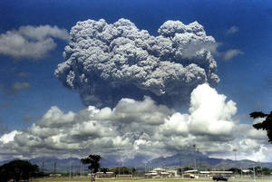

A média de temperatura do planeta Terra seria de -18 graus Celsius se não houvesse os gases corretos que interagissem com a radiação solar e nos protegesse dela. Esse femômeno é chamado de Efeito Estufa, em que os gases(nomeados também de GEE) absorvem parte da radiação e emitem para a superfície terrestre a chamada radiação infravermelha(calor). Dessa forma, a Terra consegue manter uma temperatura média de 15 graus Celsius. Alguns desses gases são o dióxido de carbono(CO2), metano(CH4), óxido nitroso(N2O) e a família dos CFCs.
Há um equilíbrio na quantidade de energias que entra no planeta, elas são energia solar incidente e refletida. Caso haja um desequilíbrio, os resultados podem ser catastróficos. As maneiras dele ocorrer variam de quantidade de energia que chega ao globo terrestre, alterações nas órbitas da Terra ou do Sol, presença dos aerossóis que resultam em queimadas, e significativa concentração dos gases mencionados na atmosfera que aumentem a temperatura média, resultando no aquecimento global.
A temperatura média global, com esses últimos efeitos supracitados, aumentou cerca de 0,74°C, com base em análises e pesquisas nos últimos 100 anos, somando-se ao fato da temperatura dos oceanos e do ar também ter acrescido, durante cinco séculos atrás. Assim, presenciamos a extinção de algumas espécies de animais e vegetais; alterações das atiidades climáticas; elevação do nível do mar; intensificação de fenômenos metereológicos; e prorrogação de secas; caracterizando-se por serem consequências do aquecimento global, baseados em pesquisas do 5º Relatório do Painel Intergovernamental de Mudanças Climáticas (IPCC)
A injeção de aerossol estratosférico (SAI) é um sistema que pulveriza carbonato de cálcio a 20 km de altura, compensando os impactos das emissões de gases do efeito estufa. Partículas expelidas por vulcões demonstraram que podem diminiuir as temperaturas em grande escala, permitindo no surgimento dessa possível solução proposta por pesquisadores de Harvard, sendo apenas uma de várias estratégias tecnológicas da Geoengenharia Solar(conjunto de estratégias emergentes para diminuição do aquecimento global).
Em 1991, o Monte Pinatubo nas Filipinas entrou em erupção e provou que suas partículas em uma carga de 20 milhões de toneladas de dióxido de enxofre conseguiram arrefecer a temperatura média da Terra em 0,5°C(por 18 meses, comparando-se à época anterior da máquina a vapor), de acordo com a publicação da Nature Magazine.
Na estratosfera, as partículas liberadas podem se espalhar pelo globo terrestre de maneira mais rápida, tornando-se eficiente o resfriamento da temperatura, em um período de 2 anos. Se forem colocadas regularmente e estrategicamente nos dois hemisférios, elas criariam um manto uniforme de protação contra os raios solares.
Segundo Gernot Wagner, de Harvard, o experimento custaria em média cerca de US$ 2 bilhões a US$ 2,5 bilhões por ano, sendo um teste barato em relação aos testes atuais(US $ 500 bilhões). O projeto tem nome de Scopex e está sendo financiado por Bill Gates e outros bilionários americanos, e está sendo liderado por David Keith, professor de física em Harvard.